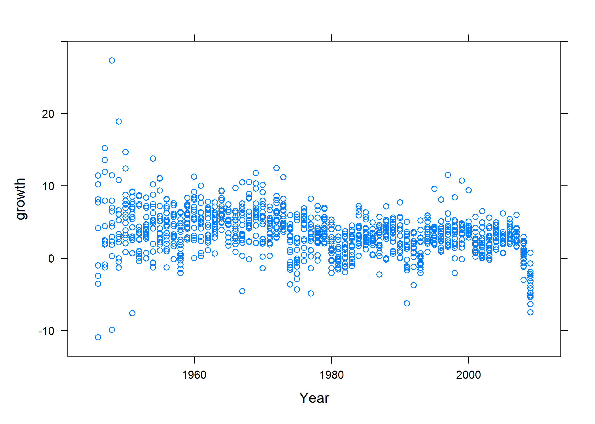
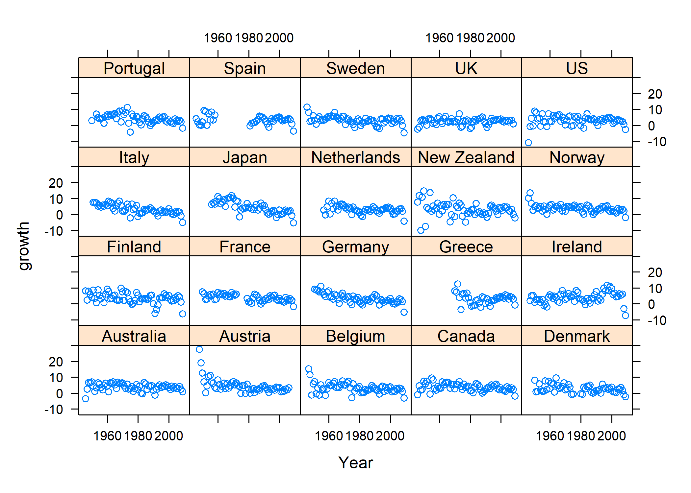
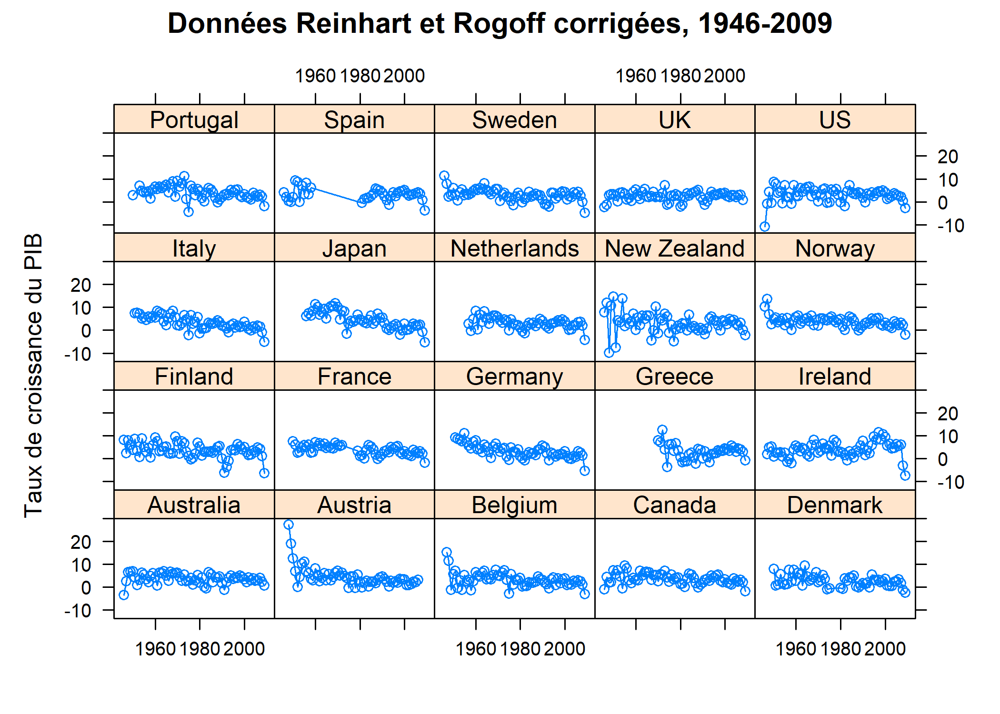

Formules
Ce chapitre vise à illustrer l’utilisation de la notation formule
de R, qui désigne l’emploi de cette notation par l’expression formula. Cette notation est utilisée par de très nombreuses fonctions de R : on en a notamment vu plusieurs exemples dans le chapitre sur les graphiques bivariés, car l’extension ggplot2 se sert de cette notation dans ses paramètres facet_wrap et facet_grid.
Dans ce chapitre, on verra comment se servir de la notation formule
dans deux contextes différents. D’une part, on verra que deux fonctions basiques de R se servent de cette notation pour produire des tableaux croisés et des statistiques bivariées. D’autre part, on verra que l’extension lattice se sert de cette notation pour créer des graphiques panelisés
, dits graphiques à petits multiples
.
Dans plusieurs autres chapitres, les opérations décrites ci-dessus sont effectuées avec les extensions dplyr d’une part, et ggplot2 d’autre part. On se servira également de ces extensions dans ce chapitre, de manière à mener une comparaison des différentes manières d’effectuer certaines opérations dans R, avec ou sans la notation formule
:
Statistiques descriptives
Les premiers exemples de ce chapitre montrent l’utilisation de cette notation pour produire des tableaux croisés et des statistiques descriptives. Le jeu de données utilisé, hdv2003, a déjà été utilisé dans plusieurs chapitres, et font partie de l’extension questionr. Chargeons cette extension et le jeu de données hdv2003 :
Pour rappel, ce jeu de données contient des individus, leur âge, leur statut professionnel, et le nombre d’heures quotidiennes passées à regarder la télévision.
Rows: 2,000
Columns: 20
$ id <int> 1, 2, 3, 4, 5, 6, 7, 8, 9, 10, 11, 12, 13, 14, 15, …
$ age <int> 28, 23, 59, 34, 71, 35, 60, 47, 20, 28, 65, 47, 63,…
$ sexe <fct> Femme, Femme, Homme, Homme, Femme, Femme, Femme, Ho…
$ nivetud <fct> "Enseignement superieur y compris technique superie…
$ poids <dbl> 2634.3982, 9738.3958, 3994.1025, 5731.6615, 4329.09…
$ occup <fct> "Exerce une profession", "Etudiant, eleve", "Exerce…
$ qualif <fct> Employe, NA, Technicien, Technicien, Employe, Emplo…
$ freres.soeurs <int> 8, 2, 2, 1, 0, 5, 1, 5, 4, 2, 3, 4, 1, 5, 2, 3, 4, …
$ clso <fct> Oui, Oui, Non, Non, Oui, Non, Oui, Non, Oui, Non, O…
$ relig <fct> Ni croyance ni appartenance, Ni croyance ni apparte…
$ trav.imp <fct> Peu important, NA, Aussi important que le reste, Mo…
$ trav.satisf <fct> Insatisfaction, NA, Equilibre, Satisfaction, NA, Eq…
$ hard.rock <fct> Non, Non, Non, Non, Non, Non, Non, Non, Non, Non, N…
$ lecture.bd <fct> Non, Non, Non, Non, Non, Non, Non, Non, Non, Non, N…
$ peche.chasse <fct> Non, Non, Non, Non, Non, Non, Oui, Oui, Non, Non, N…
$ cuisine <fct> Oui, Non, Non, Oui, Non, Non, Oui, Oui, Non, Non, O…
$ bricol <fct> Non, Non, Non, Oui, Non, Non, Non, Oui, Non, Non, O…
$ cinema <fct> Non, Oui, Non, Oui, Non, Oui, Non, Non, Oui, Oui, O…
$ sport <fct> Non, Oui, Oui, Oui, Non, Oui, Non, Non, Non, Oui, N…
$ heures.tv <dbl> 0.0, 1.0, 0.0, 2.0, 3.0, 2.0, 2.9, 1.0, 2.0, 2.0, 1…Tableaux croisés avec xtabs
Utilisons, pour ce premier exemple, la variable occup du jeu de données hdv2003, qui correspond au statut professionnel des individus inclus dans l’échantillon. La fonction de base pour compter les individus par statut est la fonction table :
Exerce une profession Chomeur
1049 134
Etudiant, eleve Retraite
94 392
Retire des affaires Au foyer
77 171
Autre inactif
83 Avec la fonction xtabs, le même résultat est produit à partir de la notation suivante :
occup
Exerce une profession Chomeur
1049 134
Etudiant, eleve Retraite
94 392
Retire des affaires Au foyer
77 171
Autre inactif
83 Le premier argument est une formule, au sens où R entend cette expression. Le second argument, data, correspond au jeu de données auquel la formule doit être appliquée. On pourra se passer d’écrire explicitement cet argument dans les exemples suivants.
L’avantage de la fonction xtabs n’est pas évident dans ce premier exemple. En réalité, cette fonction devient utile lorsque l’on souhaite construire un ou plusieurs tableau(x) croisé(s). Par exemple, pour croiser la variable occup avec la variable sexe, une solution constiste à écrire :
sexe
occup Homme Femme
Exerce une profession 520 529
Chomeur 54 80
Etudiant, eleve 48 46
Retraite 208 184
Retire des affaires 39 38
Au foyer 0 171
Autre inactif 30 53Ou alors, ce qui revient au même :
Avec xtabs, la même opération s’écrit de la manière suivante :
sexe
occup Homme Femme
Exerce une profession 520 529
Chomeur 54 80
Etudiant, eleve 48 46
Retraite 208 184
Retire des affaires 39 38
Au foyer 0 171
Autre inactif 30 53Cette écriture est plus courte que le code équivalent dans dplyr :
hdv2003 %>%
group_by(occup) %>%
summarise(
Homme = sum(sexe == "Homme"),
Femme = sum(sexe == "Femme")
)Par contre, on pourra éventuellement utiliser count de dplyr. ATTENTION : le format du résultat ne sera pas le même.
Pour un tableau croisé joliment mis en forme, on pourra avoir recours à tbl_cross de gtsummary.
| sexe | Total | ||
|---|---|---|---|
| Homme | Femme | ||
| occup | |||
| Exerce une profession | 520 (50%) | 529 (50%) | 1 049 (100%) |
| Chomeur | 54 (40%) | 80 (60%) | 134 (100%) |
| Etudiant, eleve | 48 (51%) | 46 (49%) | 94 (100%) |
| Retraite | 208 (53%) | 184 (47%) | 392 (100%) |
| Retire des affaires | 39 (51%) | 38 (49%) | 77 (100%) |
| Au foyer | 0 (0%) | 171 (100%) | 171 (100%) |
| Autre inactif | 30 (36%) | 53 (64%) | 83 (100%) |
| Total | 899 (45%) | 1 101 (55%) | 2 000 (100%) |
De plus, xtabs permet de créer plusieurs tableaux croisés en une seule formule :
, , trav.imp = Le plus important
sexe
occup Homme Femme
Exerce une profession 13 16
Chomeur 0 0
Etudiant, eleve 0 0
Retraite 0 0
Retire des affaires 0 0
Au foyer 0 0
Autre inactif 0 0
, , trav.imp = Aussi important que le reste
sexe
occup Homme Femme
Exerce une profession 159 100
Chomeur 0 0
Etudiant, eleve 0 0
Retraite 0 0
Retire des affaires 0 0
Au foyer 0 0
Autre inactif 0 0
, , trav.imp = Moins important que le reste
sexe
occup Homme Femme
Exerce une profession 328 380
Chomeur 0 0
Etudiant, eleve 0 0
Retraite 0 0
Retire des affaires 0 0
Au foyer 0 0
Autre inactif 0 0
, , trav.imp = Peu important
sexe
occup Homme Femme
Exerce une profession 20 32
Chomeur 0 0
Etudiant, eleve 0 0
Retraite 0 0
Retire des affaires 0 0
Au foyer 0 0
Autre inactif 0 0Cet exemple permet simplement de réaliser que la variable trav.imp, qui contient les réponses à une question portant sur l’importance du travail, n’a été mesurée (c’est-à-dire que la question n’a été posée) qu’aux seuls individus actifs de l’échantillon.
Statistiques bivariées avec aggregate
Ici, le premier argument est à nouveau une formule. Le second argument correspond à la statistique descriptive que l’on souhaite obtenir, et le dernier argument indique le jeu de données auquel appliquer les deux autres arguments. On peut d’ailleurs obtenir le même résultat en respectant de manière plus stricte l’ordre des arguments dans la syntaxe de la fonction aggregate :
Cette écriture est, à nouveau, plus compacte que le code équivalent dans dplyr, qui demande de spécifier le retrait des valeurs manquantes :
À nouveau, on va pouvoir combiner plusieurs variables dans la formule que l’on passe à aggregate, ce qui va permettre d’obtenir la moyenne des heures de télévision quotidiennes par sexe et par statut professionnel :
La même opération dplyr :
La fonction aggregate permet bien sûr d’utiliser une autre fonction que la moyenne, comme dans cet exemple, suivi de son équivalent avec dplyr :
# code équivalent avec l'extension 'dplyr'
hdv2003 %>%
group_by(occup, sexe) %>%
summarise(age = median(age, na.rm = TRUE))Si, comme dans le cas de summarise, on souhaite passer des arguments supplémentaires à la fonction median, il suffit de les lister à la suite du nom de la fonction. Par exemple, on écrirait : aggregate(age ~ sexe + occup, hdv2003, median, na.rm = TRUE). Ceci étant, aggregate utilise par défaut l’option na.action = na.omit, donc il est bon de se rappeler que l’on peut désactiver cette option en utilisant l’option na.action = na.pass, ce qui permet éventuellement de conserver des lignes vides dans le tableau de résultat.
La fonction aggregate permet, par ailleurs, d’obtenir des résultats à plusieurs colonnes. Dans l’exemple ci-dessus, on illustre ce principe avec la fonction range, qui renvoie deux résultats (la valeur minimale et la valeur maximale de la variable, qui est toujours la variable age), chacun présentés dans une colonne :
sexe occup age.1 age.2
1 Homme Exerce une profession 18 63
2 Femme Exerce une profession 18 67
3 Homme Chomeur 18 63
4 Femme Chomeur 18 63
5 Homme Etudiant, eleve 18 34
6 Femme Etudiant, eleve 18 35
7 Homme Retraite 48 92
8 Femme Retraite 41 96
9 Homme Retire des affaires 57 91
10 Femme Retire des affaires 57 93
11 Femme Au foyer 22 90
12 Homme Autre inactif 39 71
13 Femme Autre inactif 19 97Cette fonction ne peut pas être facilement écrite dans dplyr sans réécrire chacune des colonnes, ce que le bloc de code suivant illustre. On y gagne en lisibilité dans les intitulés de colonnes :
hdv2003 %>%
group_by(occup, sexe) %>%
summarise(
min = min(age, na.rm = TRUE),
max = max(age, na.rm = TRUE)
)Depuis la version 1.0.0 de dplyr, summarise accepte maintenant des fonctions pouvant renvoyer plusieurs valeurs, créant ainsi autant de lignes (voir https://www.tidyverse.org/blog/2020/03/dplyr-1-0-0-summarise/).
hdv2003 %>%
group_by(occup, sexe) %>%
summarise(age = range(age, na.rm = TRUE), type = c("min", "max"))Warning: Returning more (or less) than 1 row per `summarise()` group
was deprecated in dplyr 1.1.0.
ℹ Please use `reframe()` instead.
ℹ When switching from `summarise()` to `reframe()`,
remember that `reframe()` always returns an ungrouped
data frame and adjust accordingly.`summarise()` has grouped output by 'occup', 'sexe'. You
can override using the `.groups` argument.On pourrait de même définir sa propre fonction et la passer à aggregate :
f <- function(x) c(mean = mean(x, na.rm = TRUE), sd = sd(x, na.rm = TRUE))
aggregate(age ~ sexe + occup, hdv2003, f) sexe occup age.mean age.sd
1 Homme Exerce une profession 41.461538 10.438113
2 Femme Exerce une profession 40.710775 10.203864
3 Homme Chomeur 38.925926 13.256329
4 Femme Chomeur 38.012500 11.648321
5 Homme Etudiant, eleve 20.895833 2.926326
6 Femme Etudiant, eleve 21.586957 3.249452
7 Homme Retraite 68.418269 8.018882
8 Femme Retraite 69.510870 8.228957
9 Homme Retire des affaires 71.179487 7.687556
10 Femme Retire des affaires 73.789474 7.651737
11 Femme Au foyer 50.730994 15.458412
12 Homme Autre inactif 54.166667 6.597196
13 Femme Autre inactif 59.962264 14.660206Mais on réalisera vite une des limitations de aggregate dans ce cas-là : le tableau retourné ne contient pas 4 colonnes, mais 3 uniquement, ce que l’on peut vérifier à l’aide de dim ou str.
'data.frame': 13 obs. of 3 variables:
$ sexe : Factor w/ 2 levels "Homme","Femme": 1 2 1 2 1 2 1 2 1 2 ...
$ occup: Factor w/ 7 levels "Exerce une profession",..: 1 1 2 2 3 3 4 4 5 5 ...
$ age : num [1:13, 1:2] 41.5 40.7 38.9 38 20.9 ...
..- attr(*, "dimnames")=List of 2
.. ..$ : NULL
.. ..$ : chr [1:2] "mean" "sd"Pour ce type d’opération, dans lequel on souhaite récupérer plusieurs variables calculées afin de travailler sur ces données agrégées soit dans le cadre d’opérations numériques soit de constructions graphiques, dplyr ou Hmisc s’avèrent plus commodes. Voici un exemple avec summarize de l’extension Hmisc :
Attachement du package : 'Hmisc'L'objet suivant est masqué depuis 'package:srvyr':
summarizeL'objet suivant est masqué depuis 'package:gt':
htmlL'objet suivant est masqué depuis 'package:survey':
deffL'objet suivant est masqué depuis 'package:ggdendro':
labelLes objets suivants sont masqués depuis 'package:dplyr':
src, summarizeLes objets suivants sont masqués depuis 'package:questionr':
describe, wtd.mean, wtd.table, wtd.varLes objets suivants sont masqués depuis 'package:base':
format.pval, unitsNotons que Hmisc offre déjà une telle fonction (smean.sd), ce qui nous aurait épargné d’écrire notre propre fonction, f, et il en existe bien d’autres. Voici un exemple avec des intervalles de confiance estimés par bootstrap :
Et un exemple avec dplyr.
hdv2003 %>%
group_by(sexe, occup) %>%
summarise(
tibble(
age_mean = mean(age, na.rm = TRUE),
age_sd = sd(age, na.rm = TRUE)
)
)`summarise()` has grouped output by 'sexe'. You can
override using the `.groups` argument.Enfin, il est également possible d’utiliser plusieurs variables numériques à gauche de l’opérateur ~. En voici une illustration :
Panels graphiques avec lattice
Les exemples suivants montreront ensuite comment la notation formule
peut servir à produire des graphiques par panel avec l’extension lattice.
L’extension lattice présente l’avantage d’être installée par défaut avec R. Il n’est donc pas nécessaire de l’installer préalablement.
Chargeons les mêmes données que le chapitre sur les graphiques bivariés.
# charger l'extension lisant le format CSV
library(readr)
# emplacement souhaité pour le jeu de données
file <- "data/debt.csv"
# télécharger le jeu de données s'il n'existe pas
if (!file.exists(file)) {
download.file("http://www.stat.cmu.edu/~cshalizi/uADA/13/hw/11/debt.csv",
file,
mode = "wb"
)
}
# charger les données dans l'objet 'debt'
debt <- read_csv(file)New names:
Rows: 1171 Columns: 5
── Column specification
──────────────────────────────────── Delimiter: "," chr
(1): Country dbl (4): ...1, Year, growth, ratio
ℹ Use `spec()` to retrieve the full column specification
for this data. ℹ Specify the column types or set
`show_col_types = FALSE` to quiet this message.
• `` -> `...1`Rejetons rapidement un coup d’oeil à ces données, qui sont structurées par pays (variable Country) et par année (variable Year). On y trouve deux variables, growth (le taux de croissance du produit intérieur brut réel), et ratio (le ratio entre la dette publique et le produit intérieur brut), ainsi qu’une première colonne vide, ne contenant que des numéros lignes, dont on va se débarrasser :
Rows: 1,171
Columns: 5
$ ...1 <dbl> 147, 148, 149, 150, 151, 152, 153, 154, 155, 156, 157, 15…
$ Country <chr> "Australia", "Australia", "Australia", "Australia", "Aust…
$ Year <dbl> 1946, 1947, 1948, 1949, 1950, 1951, 1952, 1953, 1954, 195…
$ growth <dbl> -3.5579515, 2.4594746, 6.4375341, 6.6119938, 6.9202012, 4…
$ ratio <dbl> 190.41908, 177.32137, 148.92981, 125.82870, 109.80940, 87…Visualisation bivariée
Le même graphique s’écrit de la manière suivante avec l’extension lattice :

Visualisation par petits multiples
Appliquons désormais la même visualisation par petits multiples
que vue dans le chapitre :

Enfin, rajoutons quelques options au graphique, afin de montrer comment l’extension lattice fonctionne :
xyplot(growth ~ Year | Country,
type = c("o", "l"),
main = "Données Reinhart et Rogoff corrigées, 1946-2009",
ylab = "Taux de croissance du PIB",
xlab = NULL,
data = debt
)
Spécifier des modèles
Les formules R
En réalité, la notation par formule qu’utilise R est celle proposée par Wilkinson et al. dans les années 70 pour schématiser la relation entre plusieurs variables dans un plan d’expérience. Plus spécifiquement, l’idée revient à exprimer une relation fonctionnelle
, symbolisée par l’opérateur ~, entre une variable réponse y et une ou plusieurs variables explicatives. Disons, pour simplifier, que y est une variable d’intérêt (numérique ou facteur selon le type de modèle), x une variable numérique et que a et b sont des variables catégorielles (des facteurs dans le langage R). Voici les principales relations auxquelles on peut s’intéresser dans un modèle statistique :
y ~ x: régression simple,y ~ x + 0: idem avec suppression du terme d’ordonnée à l’origine,y ~ a + b: régresse avec deux effets principaux indépendants,y ~ a * b: idem avec interaction (équivalent à1 + a + b + a:b),y ~ a / b: idem en considérant une relation d’emboîtement (équivalent à1 + a + b + a %in% b).
L’opérateur | est quant à lui utilisé par l’extension lme4 dans le cadre de modèles mixtes avec effets aléatoires.
Voir le chapitre dédié à la régression logistique pour des exemples de modèles multivariés et le chapitre dédié aux effets d’interaction pour plus de détails sur cette notion.
Pour aller plus loin
Comme vient de le voir dans ce chapitre, la notation formule
apparaît çà et là dans les différentes fonctions de R est de ses extensions. Il est par conséquent utile d’en connaître les rudiments, et en particulier les opérateurs ~ (tilde) et +, ne serait-ce que pour pouvoir se servir des différentes fonctions présentées sur cette page. Le chapitre lattice et les formules fournit plus de détails sur ces aspects.
La notation formule
devient cruciale dès que l’on souhaite rédiger des modèles : la formule y ~ x, par exemple, qui est équivalente à la formule y ~ 1 + x, correspond à l’équation mathématique Y = a + bX. On trouvera de nombreux exemples d’usage de cette notation dans les chapitres consacrés, notamment, à la régression linéaire ou à la régression logistique.
De la même manière, l’opérateur | (pipe) utilisé par l’extension lattice joue aussi un rôle très important dans la rédaction de modèles multi-niveaux, où il sert à indiquer les variables à pentes ou à coefficients aléatoires. Ces modèles sont présentés dans un chapitre dédié.